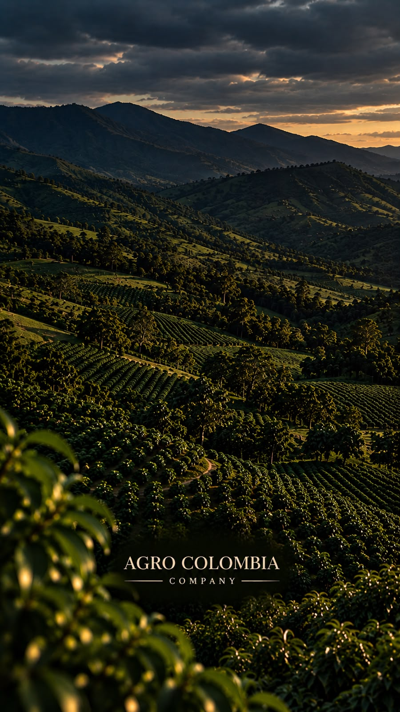
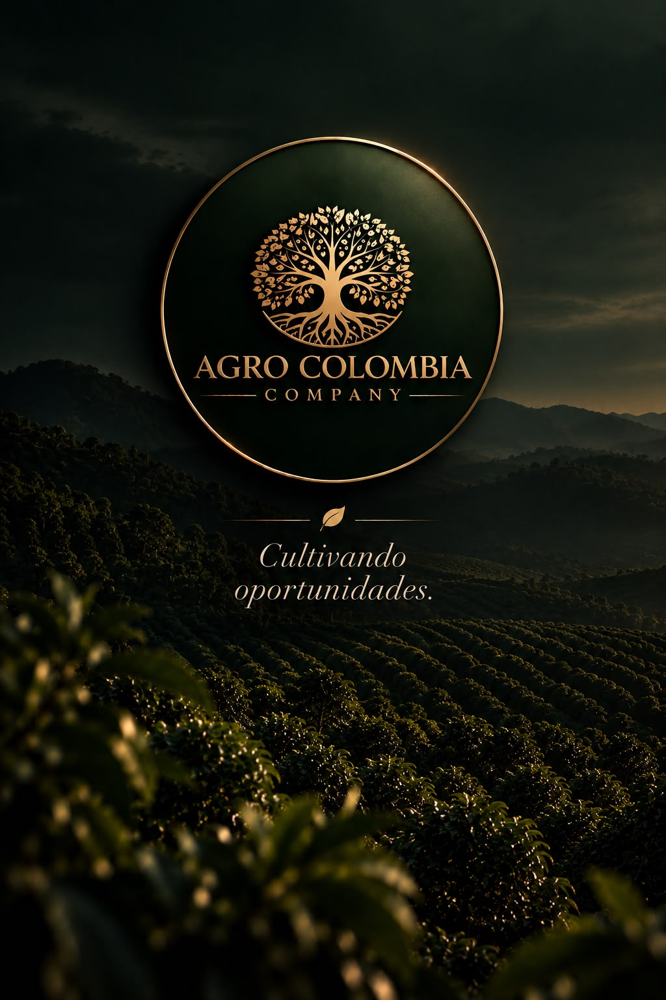

Misión
Abastecer con lo mejor del campo.
Abastecer con productos agrícolas frescos y de calidad a nuestros clientes, generando relaciones a largo plazo basadas en confianza, servicio y compromiso con el desarrollo del sector agrícola colombiano.
 Aguacate Hass colombiano de exportaciónOrigen: Sonsón, AntioquiaCertificados Rainforest Alliance, GLOBALG.A.P. e ICACapacidad de suministro de 50 toneladasCalibres del 12 al 32Abastecimiento nacional desde Corabastos, Bogotá
Aguacate Hass colombiano de exportaciónOrigen: Sonsón, AntioquiaCertificados Rainforest Alliance, GLOBALG.A.P. e ICACapacidad de suministro de 50 toneladasCalibres del 12 al 32Abastecimiento nacional desde Corabastos, BogotáNuestra historia
Producimos aguacate Hass para mercados internacionales y distribuimos productos agrícolas frescos en Colombia. Unimos el trabajo del campo con la operación comercial.

Quiénes somos
Somos una empresa colombiana especializada en la distribución de frutas, verduras y productos agrícolas frescos, directamente desde los cultivos y cosechas.
Con más de 10 años de experiencia en el sector agrario y en centros de abastecimiento, hemos construido relaciones sólidas con más de 200 clientes en Bogotá y a nivel nacional, que confían en nuestro compromiso con la calidad, el servicio y la puntualidad.
Hacia dónde vamos
Misión
Abastecer con productos agrícolas frescos y de calidad a nuestros clientes, generando relaciones a largo plazo basadas en confianza, servicio y compromiso con el desarrollo del sector agrícola colombiano.
Visión
Ser una empresa líder en distribución agrícola en Colombia, reconocida por su excelencia operativa e innovación, y avanzar hacia mercados internacionales con la calidad del campo colombiano.
Lo que nos guía

El territorio
Entre las montañas de Antioquia comienza nuestra historia. En Sonsón cultivamos aguacate Hass, en una región de tradición y vocación agrícola donde el territorio permite desarrollar un producto con potencial para distintos mercados.
Para nosotros, la tierra no es solo el lugar donde nace el producto. Es donde comienzan las oportunidades.
Nuestro cultivo
Fotos y videos reales de nuestros lotes de aguacate Hass en Sonsón, Antioquia. Toca cualquier imagen para verla en grande.
Una operación, dos puntos clave
Nuestra ubicación en Corabastos, uno de los principales centros de abastecimiento del país, nos conecta con compradores en distintas regiones.
Cultivo y cosecha de aguacate Hass
Comercialización y logística nacional

Nuestra historia sigue creciendo
Lo que comienza en las montañas de Sonsón busca llegar cada vez más lejos. Con certificaciones Rainforest Alliance, GLOBALG.A.P. y registro ICA, llevamos nuestro aguacate Hass a compradores que valoran el origen y la calidad.
ConversemosCultivemos juntos
Buscamos relaciones con clientes, distribuidores y aliados interesados en productos agrícolas colombianos.
Solicita tu cotización